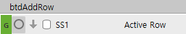
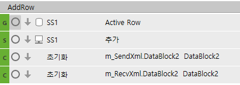

행추가
--==============================================================
-- 행추가 - 입력한 숫자만큼 행추가하기 (거래명세서입력_evc, 구매납품입력_sscnt)
--==============================================================
-- 버튼은 행추가지만 기능은 행복사에 가까움....
local IsSet, IsNotAllModify, IsNotRowAdd, IsNotAccAmtMod, col, CellName, CellNameText, RowAddCnt
RowAddCnt = fltRowCnt.Value
if tonumber(RowAddCnt) == 0 then
RowAddCnt = 1
end
-- 데이터복사
ActiveRowOld = SS1.ActiveRow
for row = 0, RowAddCnt -1 do
Trow = SS1.DataRowCnt
-- 행추가
SS1.StartRow = Trow
SS1.ActionCount = 1
SS1.ActionType = 'ActionType_InsertRow'
-- 컬럼을 돌면서 데이터 복사하여 넣자
for col = 0, SS1.MaxCols - 1 do
SS1.ActiveCol = col
CellName = SS1.ActiveColumnName
CellNameText = CellText(SS1, SS1.ActiveRow, CellName)
if SS1.ActiveColumnName == 'InvoiceSerl' then
CellNameText = ''
end
SetText(SS1, Trow, CellName, CellNameText)
if SS1.ActiveCellReadOnly == true then
SS1.ActiveRow = Trow
SS1.ActiveCellReadOnly = true
SS1.ActiveRow = ActiveRowOld
end
end
-- 추가된 행은 워킹태그를 'A'로 변경하자.
SS1.ActiveRow = Trow
SS1.WorkingTag = 'A'
end
여러 줄 한번에 복사 시
체크된 컬럼 -> 지점반품확정입력_hsg
선택된 컬럼

local cnt
cnt = SS1.DataRowCnt
for i = 0, cnt-1 do
for j=0, fltRowCnt.Value-1 do
SS1.ActiveRow = i
RunPgmMethod('AddRow')
end
end

선택된 Row => 거래명세서입력_evc
if SS1.WorkingTag == 'A' then
for i=1, fltRowCnt.Value do
DisplayAdd(SS1, m_SendXml.Data, -1)
end
end